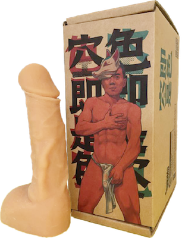

關於老大
警告 / Warning
本頁面包含客觀上足以刺激或滿足性慾，而令一般人感覺不堪呈現於眾或不能忍受而排拒之猥褻資訊，有害兒童及少年身心發展。
這在寫甚麼？This page contains obscene material that is so sexually stimulating or gratifying from an objective standpoint that an average person will either find it not publicly presentable or find it so intolerable as to be repulsive, and harm the mental development of children and youth.
警告：往下即將顯示頁面內容。
Warning: There goes the content below.
尺寸
長度 17 公分；寬度 3.9 公分。
未割包皮，些微下彎。
陰毛會修短。


更多照片請參閱老大的遊玩日記；
影片請參閱影集頁面或我的 XTube 帳號。
尺寸變化請參閱陰莖鍛鍊法。
翻模商品

更多商品資訊請洽異物官方網站，
也可直接前往購買頁面。（非台灣本地請另參閱此說明）
性交習慣
- 不太使用道具，但偶爾使用屌環。
- 比較喜歡面對面（可以抱著），例如傳教士式，或是觀音座蓮之後 bottom 上身趴到我身上－－這樣雙方都不會太累。
- 不常把人幹射（漏尿的反而比較多次，但也並不常發生），通常對方是叫到虛脫但是沒射。
- 抽插30分鐘沒問題，狀況好時可以超過一小時。
- 前液（尿道球腺液）偏少
- 射精
- 精液量普通
- 力道偏弱
- 顏色偏混濁但不會太濃
跟翻模相比


另外參閱你真的有十七公分嗎？
為什麼叫老大
一開始是因為自己太執著於把屌插進別人體內，也覺得多數人會注意到我是因為我的屌，那乾脆就以其為中心吧。
有幾個月，我甚至會在心裡對其喊話，像是「老大，剛剛那傢伙不錯吧」、「唔喔喔，老大也喜歡這傢伙嗎」，或是幫對方放鬆時的「這傢伙洞口跟裡面的觸感都很好，待會老大一定會開心的」，以及心裡OS對約炮對象喊「你這傢伙還不快好好對待老大」之類，有點像（刻板印象中的）黑道小弟以「讓大哥爽」為中心的內心戲表現。後來想想，稱呼屌為「老二」、「小頭」，儘管是突顯了男性對於屌的重視，但也或多或少地重申了「重點仍然是理智，仍然要聽腦袋的」，以及「大腦／人心才是主體」的價值觀。
不過，我並不覺得稱呼屌為「老大」，就會減損自己的主體性。雖然想逃避紛擾的時候，還是常閃過「就讓屌支配一切」的念頭。
說到底，屌與性慾仍然是我的一部分，所謂的「我」並不會脫離它們存在。
更多照片請參閱老大的遊玩日記；
影片請參閱我的 XTube 帳號。